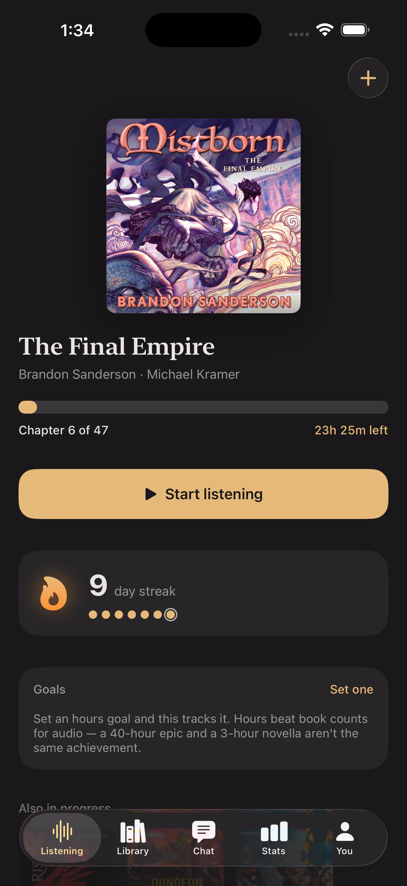

Add the audiobook
Search the audiobook catalogue, choose the right edition, and keep its cover, author, narrator, runtime, and chapters together.
One listening life
Keep one private record of the books you hear through Audible, Libby, Spotify, Apple Books, Everand, or anywhere else—without changing where you listen.
Start one listening history3-day free trial · iPhone · No Booktrace account
Independent by design
Listening services are good at remembering what happened inside their own walls. Booktrace keeps the wider story: the library loan, the Spotify listen, the Audible credit, and the book you return to years later.
How it works
Search the audiobook catalogue, choose the right edition, and keep its cover, author, narrator, runtime, and chapters together.
Booktrace does not replace Audible, Libby, Spotify, Apple Books, Everand, or your preferred player. Your audio stays there.
Run a live listening timer or add a past drive, walk, workout, or evening session. Include the chapter and playback speed that were actually part of it.
Your listening time, progress, streaks, calendar, narrators, notes, ratings, and finished books now live together—regardless of where each audiobook played.
The record your player leaves out
A title alone cannot tell you how a book occupied your life. Booktrace connects every book to the sessions, chapters, pace, narrator, and days that made up the experience.


What “across apps” means
There is no sign-in to your Audible, Libby, Spotify, Apple Books, or Everand account. Booktrace does not import their private histories or claim an automatic sync that those services do not provide.
Add the books and sessions you want to remember. Correct a session, adjust your place, or leave a book unfinished without waiting for another service to decide what counts.
Booktrace requires no Booktrace account and creates no public reading profile. Your library, notes, and listening history stay on your device.
When a library loan disappears or you change listening services, the record you created remains connected to the rest of your listening life.
Questions, answered
Yes. Add books from any listening source to the same Booktrace library, then record their sessions and progress together.
No. Booktrace does not sign in to your listening services or import their private account histories. You decide what enters your Booktrace record.
No. Keep using the audiobook player you prefer. Booktrace is the dedicated tracking, journal, and statistics layer beside it.
Yes. Log a past session when you know how long you listened, or use the live session screen while you listen.
Yes. Each session can preserve its playback speed so story progress and the time you actually spent listening remain distinct.
No. Booktrace has no public profile and requires no Booktrace account. Your listening record stays on your iPhone.
One home for every listen
Try every feature free for 3 days.